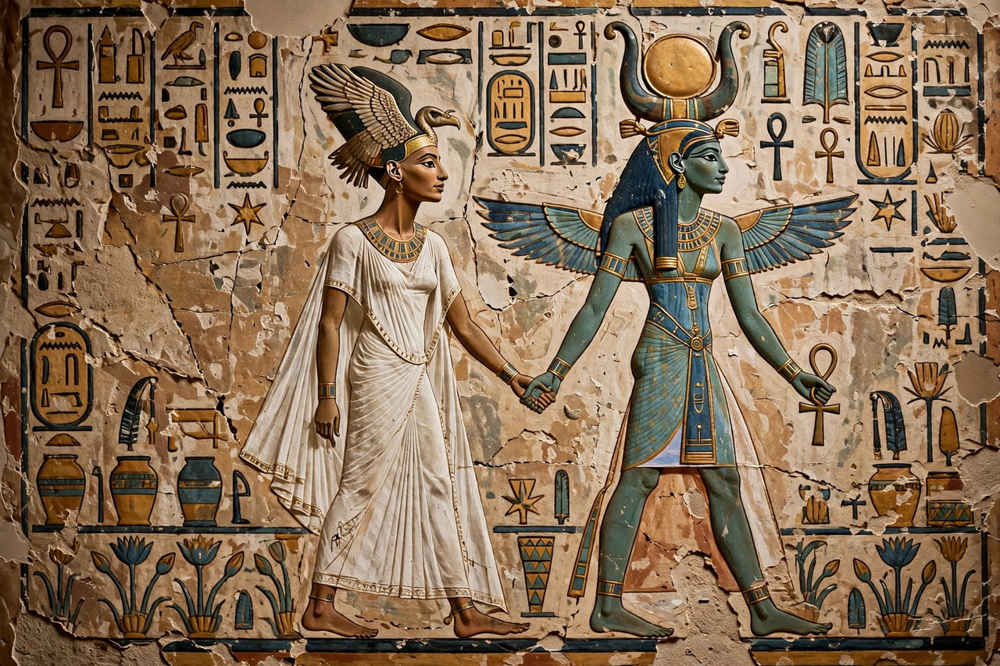

Nefertari

Nefertari, also known as Nefertari Meritmut, was an Egyptian queen and the first of the Great Royal Wives of Ramesses II, pharaoh of the 19th Dynasty. She is one of the best-known Egyptian queens, among such women as Cleopatra, Nefertiti and Hatshepsut, and one of the most prominent not to have ruled in her own right. Her lavishly decorated tomb, QV66, in the Valley of the Queens is among the finest in Egypt.
Life
Nefertari married Ramesses before he became pharaoh, around the age of thirteen, and bore him several children including the princes Amun-her-khepeshef and Pareherwenemef and the princess Meritamen. She held numerous titles — "Lady of Grace", "Sweet of Love", "Lady of The Two Lands" — and played an active ceremonial and diplomatic role; her correspondence with the Hittite queen Puduhepa, accompanied by gifts, survives in the Hittite archives after the peace treaty of 1258 BC.
Monuments
At Abu Simbel, Ramesses dedicated the smaller temple to Nefertari and the goddess Hathor — a rare honour for a queen, whose statues stand at the same height as the king's. She appears beside Ramesses on monuments throughout Egypt from the earliest years of his reign. She is thought to have died around the 24th or 25th year of his reign, when she was in her forties.
Tomb QV66
Discovered by Ernesto Schiaparelli in 1904, her tomb's painted walls — depicting her journey through the afterlife guided by gods and goddesses — are regarded as masterpieces of ancient Egyptian art, though salt damage required extensive restoration in the 1980s and 1990s. Little remained of her burial goods; a mummified pair of legs found in the tomb has been tentatively identified as hers.
See also: Ramesses II, Abu Simbel, Valley of the Kings.